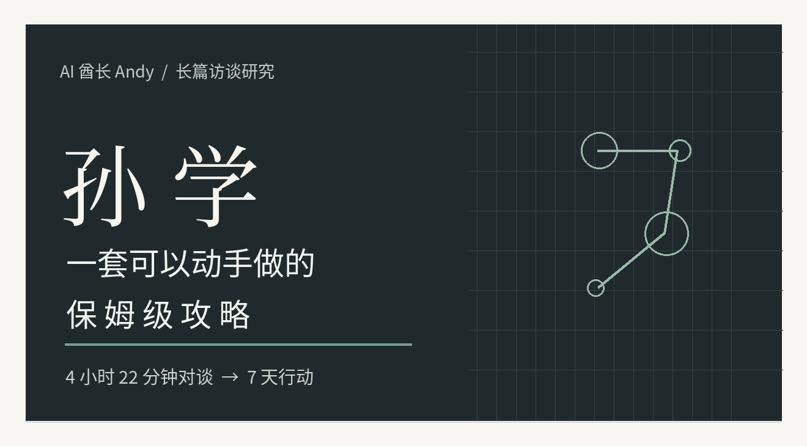
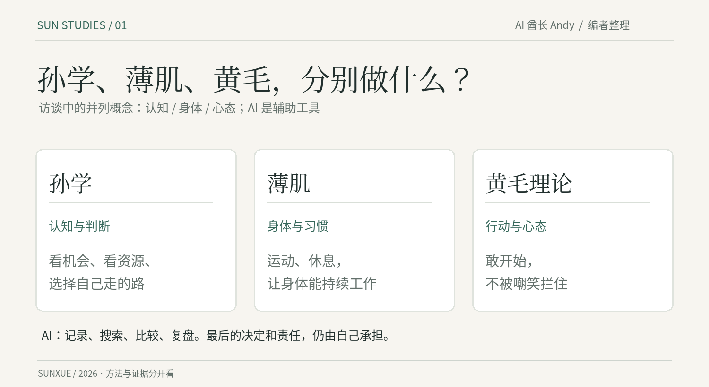
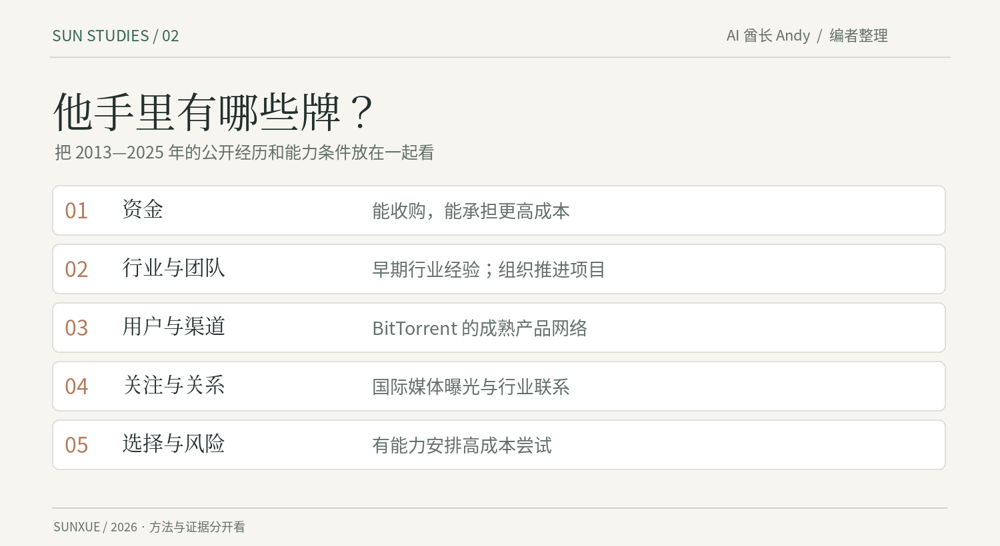
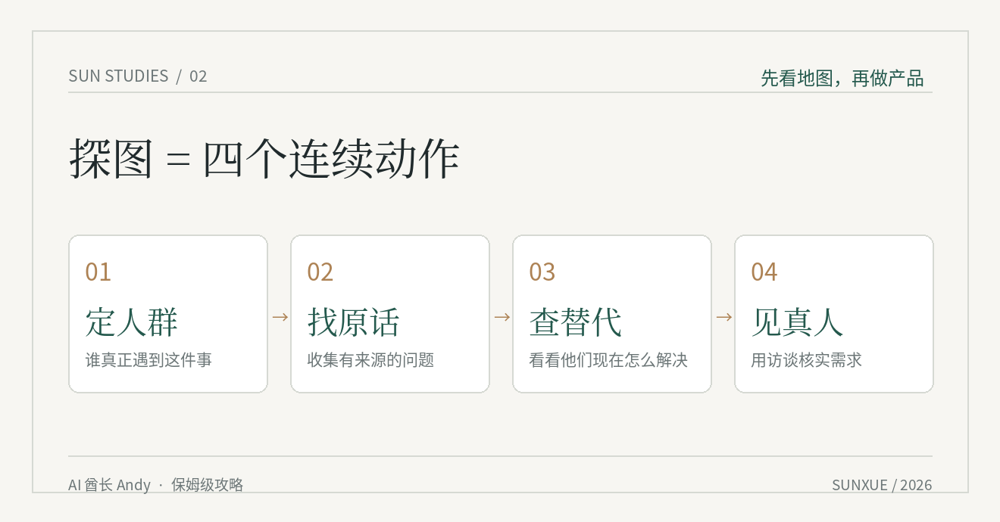
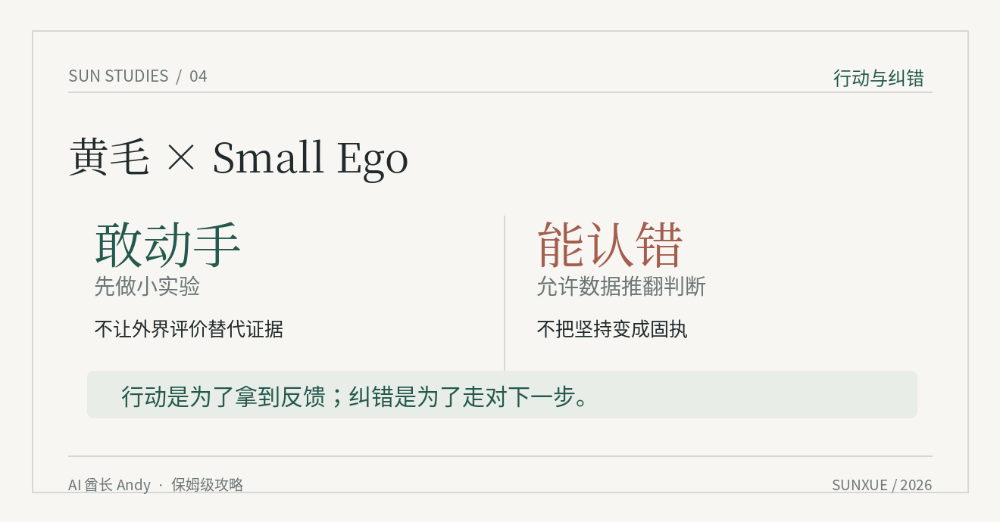
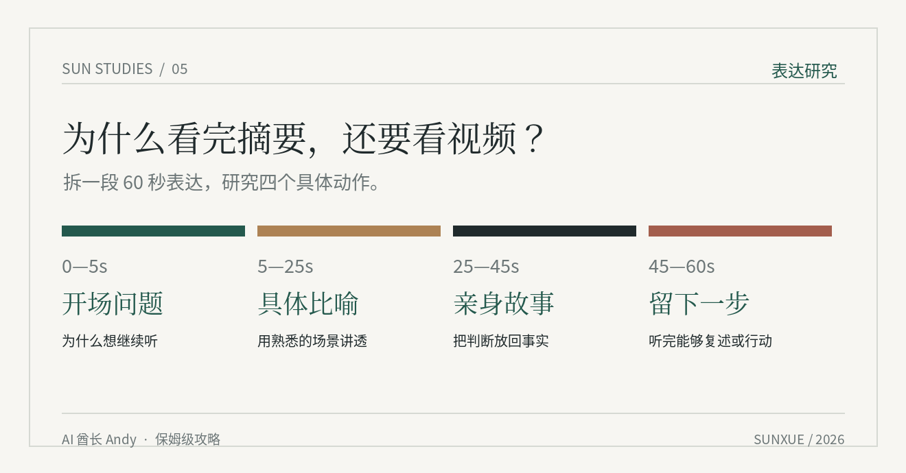
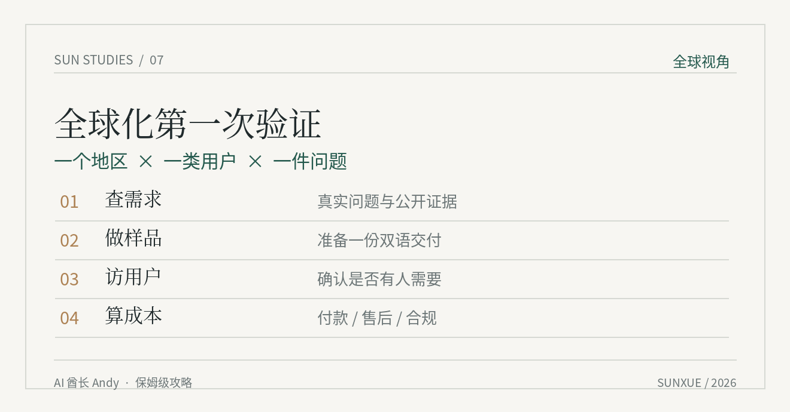
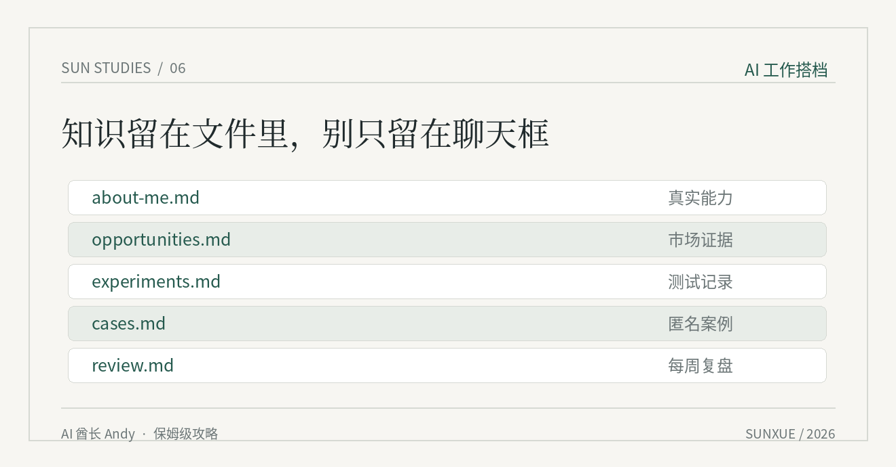
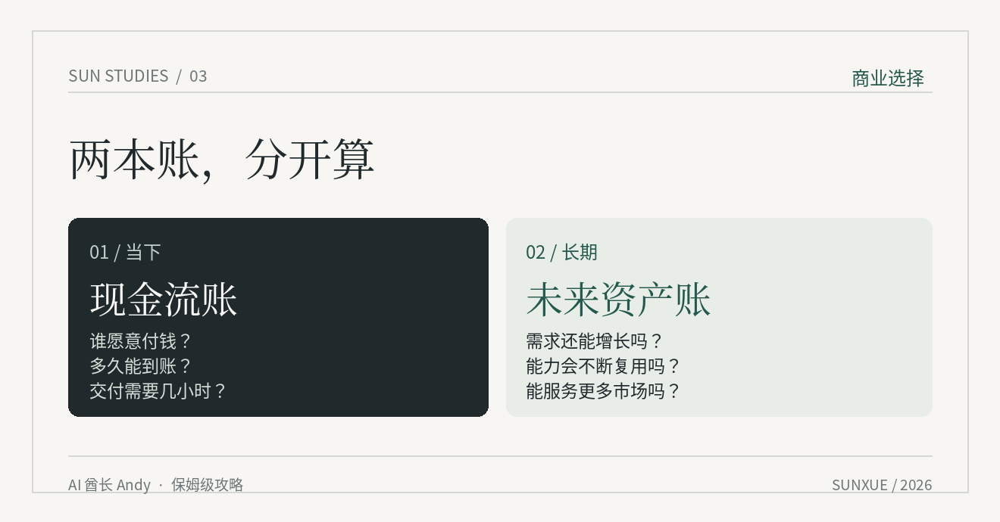
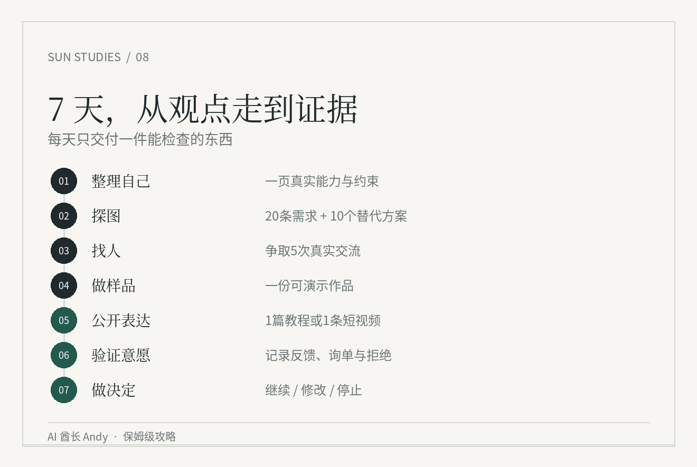

我把孙宇晨 4 小时访谈拆成一套《孙学》实操攻略，让你7天改变人生
孙宇晨到底是一个什么样的人？孙学到底是啥？
我觉得与其听别人去评论他，不如自己去了解。所以今天呢先让 GPT 把孙宇晨和邵艾伦的访谈扫了一遍，然后自己打开原视频，快进看了将近三个小时，当然去看的原视频，而不是什么剪辑版。
GPT 扫完这个访谈，然后我就让GPT全网扫荡了一下关于孙学的和他个人的所有的信息。另外我之前也看过他写的那些书，最后汇总下来啊，这些东西我平时就在研究，或者我也是这样在生活着，不过这个人非常值得学习的点，一个是他的表达能力，第二是他今天的在做的事情。
比如孙宇晨讲一个道理，常常是笑着说，讲着讲着扯到游戏、身边的人，或者自己做过的事。我自己本身也在研究AI+IP，这就是很好的样本。另外孙宇晨是个有争议的人，敢做、敢试、眼光独到，当然他所有的选择，没有必要一概认同。他非常擅长通过夸张化的手段来获得关注，所以很多结论你要全听的话，容易坑进去哈哈。
所以呢，我们干脆出一个《孙学2.0》保姆级攻略，分享给所有感兴趣的人。

一、孙学到底学什么？
我先把话说明白。这里说的《孙学》，是根据这次访谈和孙宇晨的公开经历整理出来的一套学习办法，不是什么官方课程。用的时候很简单：先看自己手里有什么，再去市场里找人，最后拿一个小项目试一下。能跑通就继续，跑不通就改。光背几个名词没用。
比如访谈里反复出现的“探图”，你可以直接理解成先出去看看市场。《星际争霸》里，地图刚打开是一片黑。你还不知道矿在哪、对手在哪，就一直在家造兵，造得越快，可能浪费得越多。换到生活里，就是一边忙着学 AI、开发产品、拍视频，一边连客户是谁都不知道。
“体验论”更简单。没做过的事，先找一个成本能承受的方式试一下。“黄毛理论”是别人笑你也敢迈第一步。“Small Ego”则是别人拿出证据证明你做错了，你肯认。至于薄肌、AI 原生这些词，很多都是把早就存在的做法重新起了个方便传播的名字。词记不住没关系，能用就行。
这篇文章后面有一套七天练习。你不用先买课，不用辞职，不用买设备，也不用先写三个月代码。拿一件你已经会做的事，找真正需要它的人，然后看看有没有人愿意用、愿意付钱。

二、别急着学他，先看看孙宇晨手里有什么牌
孙宇晨是怎么走到今天的？把时间往前拉一点看，会清楚很多。
2013 年前后，他进入 Ripple 相关业务，较早接触这个行业，后来也做过“陪我”这样的社交产品。2017 年，他创立 TRON。也就是说，在大多数人刚刚听说这类新东西时，他已经在行业里待过一段时间，认识过人，做过产品，还组建起了自己的项目。
2018 年，TRON 收购了 BitTorrent。BitTorrent 是一款运营多年的文件传输产品，背后有团队、技术、品牌，也有大量已经养成使用习惯的用户。很多人做产品，第一关就是怎么让用户知道自己。他可以通过收购，直接接手别人多年积累的产品和用户网络。注意，接手用户不等于用户都会付钱，但比从零起步多了不少筹码。
2019 年，他拍下与巴菲特共进慈善午餐的机会，后来在 2020 年完成了这顿饭。一次餐叙，全球很多媒体都报道。到了 2025 年，他又参加了蓝色起源 NS-34 亚轨道飞行。这些事听起来很热闹，背后都需要钱、关系、组织能力，以及愿意承受争议的心理准备。普通人连成本都承担不起，硬学动作没有意义。
所以他手里到底有什么？有资金，可以收购、投资，也能承担大额试错；有行业经验和团队，可以把买来的产品继续经营；有现成的产品、用户和分发渠道，不用每次从零找人；有媒体关注和商业关系，做一件事更容易被别人看见；还有时间和选择权，可以把精力放在成本很高、周期很长的事情上。这里每一项都是实实在在的条件，少了其中几项，同样的动作就可能做不成。
我自己做过多年 AI 产品，也做内容和咨询。手里能拿出来的牌，是做过的项目、积累的案例、内容账号和接触过的真实需求。孙宇晨可以收购一个已有用户的产品，我当然做不到。但我可以先找已经聚集了用户的地方，比如一个行业社群、一个愿意合作的渠道，或者一个已经有人付钱解决的问题。能找到人，再决定做什么产品。
今晚就做一个小动作：拿张纸，写六行——钱、时间、作品、用户、合作关系、已经收到过的钱。每行只写事实。比如“做过哪三个项目”“谁愿意介绍客户”“每周能拿出几小时”。“学习能力强”“未来一定有机会”这种话先别写，自己夸自己没用。

三、探图怎么探？我给你一套能照着做的
很多人听到“探图”，以为要研究全球市场、看几十篇报告，搞得很复杂。其实先把一小块地方看清楚就够了。
假设你会用 AI，想做点副业。先别打开 Codex 开始写网站，第一件事是写清楚：你想帮谁解决什么问题。比如“工作两三年、正在准备面试的人”，就比“所有想用 AI 的年轻人”清楚得多。你连要服务谁都说不出来，后面都是空的。
接下来去找他们自己说过什么。招聘社区、公开问答、评论区、社群里经过允许公开的信息都可以。先抄二十条真实问题，保留原话、日期和出处。有些人抱怨投了几十份简历没回应，有些人卡在面试，有些人不知道某个岗位究竟考什么。这三个问题听起来都叫“求职难”，实际需要的服务完全不同。
然后去查现成的解决方法。别人有没有在卖服务？卖的是简历修改、模拟面试、课程，还是工具？公开能看到多少钱就记多少钱，看不到就写“未知”。至少找五到十个同类案例，别直接让 GPT 编一张竞品价格表。AI 可以帮你整理，原始资料还得自己核对。
最后去找真人聊。先联系五个人，争取聊成两三个；没人回就换渠道。不要一上来问“我做个工具你买吗”，这个问题谁都会客气。你可以问：“你上一次遇到这个问题是什么时候？最后怎么处理的？花了多少时间？有没有付钱找人帮过你？”问的是已经发生的事，得到的信息才更接近实际情况。
这一轮结束，你应该能用一句话说出来：谁遇到了什么麻烦，他现在怎么解决，我能在哪一步帮上忙。说不出来，就接着问人，先别做产品。
直接复制给 GPT：
我想调查一个真实需求，目标人群是：[写清楚人群]。
我已经会做的事情是：[只写真实经验和作品]。
请给我：
1. 20 个能用于搜索真实用户问题的关键词；
2. 需求记录表，列出原话、出处、日期和具体场景；
3. 需要我亲自核实的竞品、价格和替代方案字段；
4. 5 个只问过去真实经历的访谈问题；
5. 一张证据表，把已证实、待证实和纯猜测分开。
不要虚构用户、评价、销售额或价格。

四、体验论怎么用？先做一单，再决定要不要做大
孙宇晨讲体验，能讲到上太空。那是他的预算。普通人学体验论，没必要先花钱买一张很贵的门票。你能用两小时试的事，就别上来投入两个月。
比如你想帮小商家做 AI 客服。别先做一个完整系统。找一家你能联系上的店，先问店主：每天最重复的十个问题是什么？营业时间、停车、预约、退款、价格，有没有人每天反复回答？征得同意以后，把这些问题整理成一份能用的回复模板，拿给店主试。看店主愿不愿意用、有没有帮他省时间，再讨论后面要不要做自动化。
这就是一次实验。它不需要你租办公室，也不需要先弄一个很漂亮的官网。最麻烦的通常不是 AI 写不出答案，而是你根本找不到愿意试的店主。我做 AI 产品这么多年，这一点感受很深：做出一个功能，现在越来越容易；让一个真实的人愿意用，还得靠自己去找。
做实验之前先规定边界：最多花几个小时、花多少钱、要找几个真实用户、拿到什么结果算值得继续。比如三天内做出样品，让至少两个人实际试过；如果连一个愿意看样品的人都没有，就先去解决找人的问题。不要把“页面做完了”当作项目成功。
直接复制给 GPT：
我想验证这个想法：[具体想法]。
我的预算上限：[金额]；可用时间：[小时]；已有资源：[事实]。
帮我设计一次 3 天内能完成的小实验：
每天做什么、要接触谁、做出什么样品、如何收集真实反馈。
先列出不用开发完整产品就能验证的办法。
再写清楚什么结果继续、什么结果修改、什么结果停止。
不要把点赞、口头夸奖当成付费意愿。
五、黄毛理论，我喜欢它的胆子，但不能只学胆子
访谈里说到“黄毛理论”，我听得挺乐。这个词确实有点营销味，但意思好懂：别人说你不行、笑你瞎折腾，你也敢动手试。很多事情，一开始就是丢脸的。第一次录视频，第一次把作品给客户看，第一次主动谈合作，都不可能像准备了一百遍那样漂亮。
不过这里要配上他讲的另一个词，Small Ego。翻译得直接一点，就是别把自己看得太重。有人嘲笑你拍视频，笑归笑，你该发还可以发；客户明确说你做的东西根本用不上，那就得听。前者只是别人的眼光，后者可能就是市场在告诉你答案。
我自己做内容也有这种感受。一个月接过五十多个商单，这些都是一条条内容和一次次合作慢慢做出来的。但哪种内容能带来真实需求、哪种只是看着热闹，不能光看播放量下判断。发出去后要看数据，更要看有没有人来找你、最终有没有成交。
遇到反对意见，我建议只问一句：他说的是情绪，还是能核实的事实？如果是事实，就核实；如果只是看不起你，没必要花半天跟人吵。敢出手，也敢改。这两个动作放一起才有用。

六、我看三个小时原视频，主要是在偷师他的表达
假如把“探图”写成一句话，可能就是“行动前应该充分调查市场”。这话对吗？当然对。但看完也就看完了。孙宇晨说游戏刚开局，整个地图是黑的，你在家里拼命造兵，不出去看看哪里有矿，可能方向一开始就错了。一下就有画面了。
他讲东西还有个习惯：经常笑着说。即使聊很大的事，他也会把它拉回游戏、身边的人、自己做过的事。观点本身也许你早就知道，但你愿意接着听。我看原视频花了快三个小时，主要就是想把这些细节看明白。GPT 能把他说过的话总结出来，没办法替我感受那种现场表达。
我最近在研究 AI+IP，这其实是很好的样本。特别是一个人怎样用具体故事代替抽象判断，怎样在别人可能不认同的地方把自己的立场讲清楚。至于他故意制造话题的做法，看看就好，别连同夸张和争议一起照搬。
你也可以练。打开原视频，随便挑一段你真的喜欢的 60 秒。先按原话抄下来，再标出四个位置：第一句话怎么起、用了哪个真实故事、那个比喻讲了什么、最后落在什么动作。然后关掉视频，用你自己的事情讲一遍。录一段，给朋友听，问他哪里没听懂。做完一次，比收藏十张“顶级表达公式”有用。
表达拆解 Prompt：
这是某段访谈的逐字稿：[粘贴 60 秒文字]。
请只帮我标注：开场、具体事实、比喻、转折、最后的判断。
找出最容易让普通人听懂的句子，并解释它为什么好懂。
再问我三个问题，帮助我找到自己经历里真实发生过的对应故事。
没有我提供的经历，不要帮我编。

七、全球化这件事，我看完后更想认真做了
孙宇晨提到巴菲特、马斯克和特朗普这些他关注的人物，我有一个感受：他长期看的是一个比眼前更大的市场。你赞不赞同这些人的选择是另一回事，但值得去看看不同地方的人都在做什么。
我今天看完视频，立刻又去处理了一些全球化工作的基础设施。具体的技术细节这里就不展开了。之前为了跨地区使用一些产品，我确实折腾过不少时间。我的想法也变得更明确：以后要多去海外走一走，自己接触当地的产品、用户和生意。现在不去，至少要先把研究和实际沟通做起来。
国内有些领域已经很挤了，大家都在同一个地方抢用户。换一个国家，别人缺的东西、愿意花的钱、常用的产品，可能都不一样。别把我们每天看到的那一小块市场，当成全世界。
但我也得给自己设一个停止折腾的标准。网络、账号、网站这些工具，达到能正常工作就够了。路修好了，就得出门找客户。继续无休止地调环境，最后很容易搞成一个人用了一个月时间，搭出一条根本没人走的高速公路。
普通人想试海外，也别一开头就研究十个国家。先选一个地区、一类用户、一个问题。搜五到十个已有产品，查它们到底卖什么，准备一个能展示的双语样品，再尝试联系三到五个目标用户。支付方式、法律和数据隐私要提前核查，没搞明白之前别急着收款。把第一轮交流做成了，再说扩大。

八、AI 原生到底要怎么做？先把资料存好
孙宇晨在访谈中讲过把饮食、运动、睡眠等资料持续交给 AI 整理。这个做法我已经在不少事情上用过类似思路。我平时会让 GPT 看资料，让 Codex 做项目，也会用 AI 帮我整理内容。问题是，资料散在几十个对话里，下次想接着做，又得重新解释一遍。
解决起来其实很笨：建文件夹，留下记录。比如五个文件就够了：一个写自己做过什么，一个记录用户问题，一个放正在验证的项目，一个收录已经做好的作品，一个专门复盘。文件名随意，关键是每次做完以后往里面加新证据。今天谈过哪个客户、对方问了什么、哪些功能没用、下一步答应了什么，写清楚。
我最近做这篇公众号文章就踩过一个很小的坑：HTML 在浏览器里看着正常，复制到微信编辑器却连续报了很多条“文字对齐异常”。这件事提醒我，AI 帮你做完文件，不等于用户真的能用。最后一定要在发布的地方试一遍。这比你又多装了几个 Agent 更有价值。
涉及客户资料要先征得同意，该匿名就匿名，私人简历、电话号码和聊天记录别直接扔进公开项目。AI 可以帮你整理事实，没发生的事它也可能写得像真的一样，最后核实责任还是在自己。
每周复盘 Prompt：
下面是我本周的原始记录：[粘贴记录]。
请分别列出：
1. 已经完成的事，附对应记录；
2. 花时间最多、结果最少的事；
3. 新证据和我原先判断冲突的地方；
4. 下周只值得优先做的三件事。
凡是缺少证据的，直接标“没法确认”。
不要写激励语，也不要把计划写成已完成。

九、运动、薄肌和生活方式，我只挑能用的部分
访谈聊了很多运动和身体管理。薄肌这个词我并不打算专门去背，名词能传播，不等于你学会了怎么锻炼。但它提醒我一件很实际的事：如果长期睡不好，第二天脑子和身体的状态就会受影响，做什么都慢。
我之前就给自己定过，睡眠排第一。可一忙起来，晚上还是会拖延，第二天再想办法补救。我今天看完视频以后，马上又把运动提上日程了。先把该睡的觉睡好，把能坚持的运动做起来。别人怎么练、吃多少，我不打算直接照搬。每个人身体条件不同，方法也要调整。
这段我没有什么神奇经验可以分享。能连续做一个月，比今天兴奋起来做一次重要得多。
十、选眼前的生意，还是未来的生意？我现在这样看
这是我看完以后还在想的一件事。赚钱的事情很多，适合现在做的和值得做十年的，未必一样。我手里有内容合作、咨询，也在研究 AI 产品和全球市场。它们回款的速度不一样，积累下来的东西也不一样。全部一起抓，最后可能每件都只做了一半。
我现在会把它们放在两张表里。一张算眼前：这个月谁会付钱、我在哪能找到他、做完一单要花几小时、钱什么时候到账。另一张算未来：这个行业以后还有没有人需要、每做一单能留下什么、能不能把经验变成产品、内容或渠道。眼前这张表保证不饿肚子，未来那张表决定几年后还能不能往前走。
举个简单例子。你现在做一个服务，有客户马上愿意付钱，但每一单都要自己花十几个小时。那它可以先拿来赚钱，却不一定适合无限扩大。反过来，一个产品看起来很有未来，写了三个月，连一个愿意试的客户都没有，也不该因为“长期主义”就一直烧时间。最好先找到有人愿意付费的小切口，再考虑它以后能不能长大。

十一、七天实操：别背概念，拿一件事试一遍
为了方便你照着做，我把上面的东西压成七天。这不是七天赚多少钱的保证，只是让你结束一周以后，手里能多一些真实证据。每天一到两个小时就行。以“用 AI 做一项小服务”为例，你也可以换成求职、内容、设计或其他自己熟悉的领域。
第 1 天，盘点手里的牌。写下已经会做的事情、能证明的作品、认识哪些用户、每周能投入多少时间、最多愿意损失多少钱。最后做成一页纸。如果只有时间、没客户，也照实写。
第 2 天，探图。选一种人，搜二十条他们自己说过的问题，记录出处。再找五个正在提供解决方案的人或产品，看看别人怎么做。今天不要写代码。
第 3 天，接触真人。联系五个目标用户，争取至少聊成一两位。问他们上次遇到这个问题是什么时候、怎么解决、有没有花过钱。今天的产出是一份原话记录。没人回复也记录，不要假装完成了访谈。
第 4 天，做一个小样。只针对前面最明确的问题，做一份能演示的成果。比如一页诊断报告、一份内容方案、一套常见问题回复。别做十个功能。找一个人试，观察他怎么用。
第 5 天，学表达。把这个问题写成一篇能看懂的文章，或者录一分钟视频。说清楚你帮谁、解决了什么、用了什么办法。能用自己的例子就用自己的，没发生过的不要编。
第 6 天，问付费。回到真正有需求的人那里，问他愿不愿意为完整服务付费，价格和交付范围说具体。对方不买，也可以问一句为什么。把“看过”“问过价”“付过款”分别记录，别混成一个数字。
第 7 天，算账。总共花了多少小时，花了多少钱，找到多少真实用户，有几人愿意试，有没有人付款？哪些是证据，哪些还是自己的猜测？最后只能做三个决定之一：继续、修改、停掉。别用“我再研究研究”拖过去。

想让 GPT 或 Codex 每天盯着你做，可以直接复制这一段：
我现在要做一次七天的小项目验证。
已有能力：[真实能力]；想服务的人：[具体人群]；
每天可用时间：[小时]；预算：[金额]；准备验证的问题：[一句话]。
每天只给我当天的操作清单：找谁、做什么、交付什么、如何判断完成。
晚上我会提供当天实际发生的事。根据事实更新第二天安排。
把用户原话、我的判断和你的推测分开。
七天结束后，按投入、真实需求、试用反馈、实际付款和交付成本做复盘。
不许编造客户、结果或收入。
十二、七天之后，怎么知道要不要继续？
有人连回复都不回复，先查是不是找错了地方、话说得太空。有人愿意聊，却不愿意用你的样品，检查这个问题是不是不够急。有人说“挺好”，但没人愿意掏钱，这最多说明有人觉得有意思。有人愿意付款，可你做一单要二十小时，最后只收很少的钱，那还得重新设计交付。
我做内容和产品时，也容易犯一个错误：看见工具能做，就想顺手多做一点。后来才发现，功能做得越多，不代表离客户越近。孙宇晨讲探图，我觉得恰好可以用来提醒自己——出去看看，拿结果回来，再决定往哪个方向继续投入。
我今天看完视频，做了两件很具体的事：把运动重新提上日程，继续推进全球化工作需要的准备。接下来我还会继续研究他的表达方式，也会把保姆级攻略系列认真做下去。这个系列费时间，但文章、案例和开源项目都能留下来。每做一篇，我希望它都能帮读者真正完成一件事情。
你看完以后，不用急着研究下一百条“孙学”。先把自己手里有什么牌写出来，再找一个人，问清楚他眼前有什么问题。做完这两件事，你对机会的认识就会和只看视频时不一样。
资料参考：2018 年 BitTorrent 收购公告、蓝色起源 NS-34 任务记录、巴菲特慈善午餐的公开报道，以及孙宇晨与邵艾伦访谈。文中“七天实验”和商业演示为我整理的练习方法，并非受访者的官方课程；人物经历与个人评论分开理解。